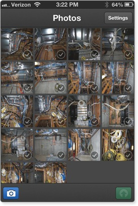
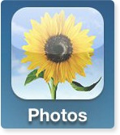
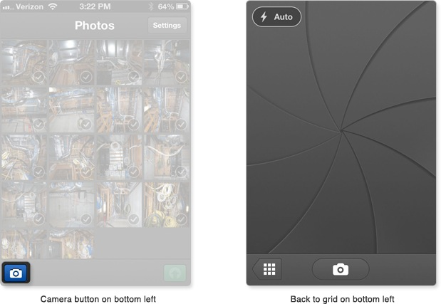
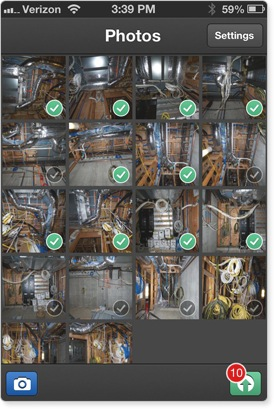
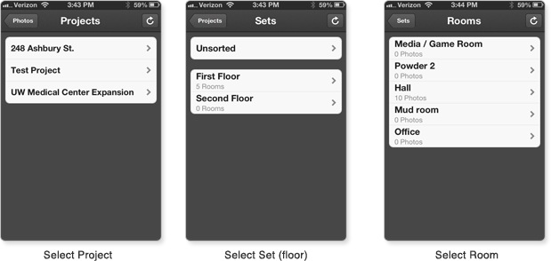
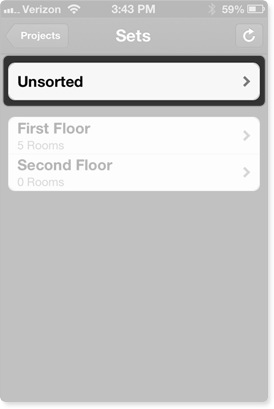
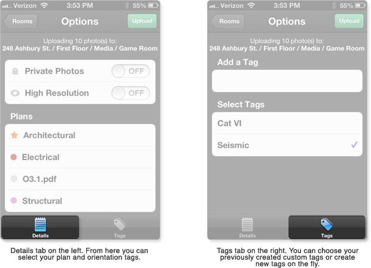
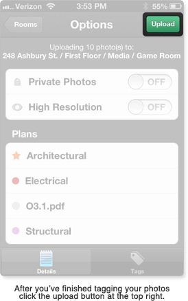

Mobile App
The Threshold Mobile App is still in Beta. This means it's a work in progress and subsequently you may find bugs or sluggish performance.
Currently we're aware that the camera functionality is a bit slow. If you find any other bugs please report them to support@383studio.com
Introduction
The Threshold Mobile App allows you to take, organize, tag, and upload photos to your project. Most importantly you can substitute your smartphone for your digital camera
Log in
To log into ThresholdCM mobile use the same login you used to create your web account.
Note: This means you'll need to create an account on thresholdcm.com before you can use our mobile app.
Settings/defaults
To change the default app settings select the Settings button on the upper right of the Photos screen
Defaults
- Private Photos - All photos will be public photos by default. To find out more about public vs. private photos click here
- High Resolution Photos - Threshold uploads standard resolution photos by default. Standard resolution photos measure 1000x750 pixels. That's about the size of a small laptop monitor and is big enough for most progress photo applications. The large resolution photos measures 2000x1500 pixels. That's almost big enough to fill most 27" monitors. You'll experience substantially faster upload speeds if you upload standard resolution photos.
Note: You can adjust these settings on a per-upload basis when you upload photos.
Grid View
The grid view is where you'll take photos and choose which photos to upload. There is no internet connection required to use the camera.
Note: To delete photos from the app you must use the Photos app on your iOS device. Apple doesn't allow us to delete directly from the camera roll in our app. If you want to delete the photos completely and not just from the Threshold app you must delete from the Camera Roll, not the ThresholdCM album.
Taking Photos
To take a photo, select the camera icon on the bottom left of the Photos screen. When you are finished taking photos hit the Grid View button at the bottom left of the camera screen. It may take up to five seconds for your photos to appear in the grid view.
Grid View
The grid view displays all photos you have taken with the app. The newest photos appear at the top of the list. To view a larger preview of a photo click on the thumbnail.
Select Photo(s) for upload
To select a single photo or multiple photos, click on the check mark on the bottom right of each image that you wish to upload.
Once the thumbnails have been selected, click on the upload button on the bottom right of the Grid View. The button will have a number depicting the number of photos that you have selected for upload.
Select Location
Select the project, set (floor), and room you want your photo(s) to be uploaded to.
You can also select unsorted, which will allow you to assign the photos to various sets/rooms from the website at a later time.
Options
You can toggle between the Details tab and the Tagging tab by using the controller at the bottom.
Private Photos
To make this batch of photos Private, turn on the Private Photos button. To read more about public vs private photos click here.
High Resolution
To make this batch of photos high resolution, turn on the high resolution button. This may delay the upload speed for this batch of photos.
Plans
The plan section lists all of the plan types that you have uploaded to your project. You must select at least one plan for your photos to be associated with. You can read more about plan management here.
Trades
The trades section lists all of the other default plan types that are available on Threshold. You can add these as tags to your photos. You can read more about tags here.
Orientation
Select which orientation the photos depict. You can select one orientation for the entire batch of photos.
Tags
You can add custom tags directly from the app. To read more about custom tags click here. Add a tag by touching the empty entry field. Once you've added a tag it will be selected automatically. A check mark will appear to the right of all selected tags.
Upload
When the photos have been successfully uploaded you can select done on the upper right of the page to return to the camera to take more photos.
Note: If you're uploading multiple photos ALL photos will have the same tags. That means if you only want to add specific information to certain photos upload in smaller batches to avoid tagging photos with unwanted information.